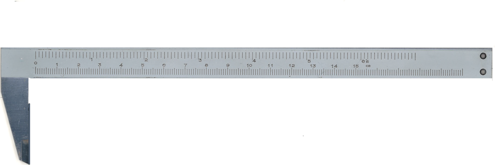
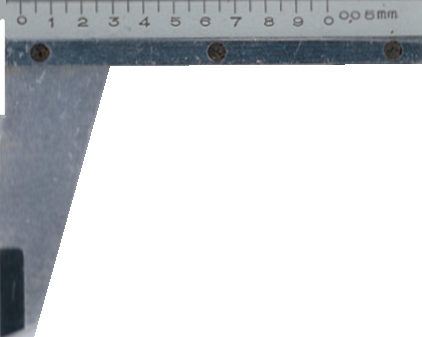
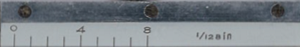

Εικονικό Παχύμετρο 0–157 mm (mm & inch)
Σύρε το
κινητό μέρος
(mm + inch) ή χρησιμοποίησε τα κουμπιά κίνησης.
Η ένδειξη σε mm είναι καλιμπραρισμένη· εμφανίζεται και σε ίντσες (δεκαδικές και κλασματικές 1/128").



Fast Lower (-1 mm)
Lower (-0.05 mm)
Higher (+0.05 mm)
Fast Higher (+1 mm)
Digital Display: ON
Κύρια κλίμακα:
0 mm
Βερνιέρος:
0.00 mm
Συνολικό:
0.00 mm
Inches (decimal):
0.0000 in
Inches (fraction):
0 in